화공기사(구) (2019-09-21 기출문제)
1과목: 화공열역학
1. 카르노사이클(Carnot cycle)의 가역 순서를 옳게 나타낸 것은?
- 단열 압축 → 단열팽창 → 등온팽창 → 등온압축
- 등온팽창 → 등온압축 → 단열팽창 → 단열압축
- 단열팽창 → 등온팽창 → 단열압축 → 등온압축
- 단열압축 → 등온팽창 → 단열팽창 → 등온압축
(정답률: 66%)

2. 기상 반응계에서 평형상수가
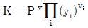
로 표시될 경우는? (단, vi는 성분 I의 양론수,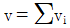
및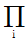
는 모든 화학종 i의 곱을 나타낸다.)- 평형혼합물물이 이상기체와 같은 거동을 할 떼
- 평형혼합물이 이상용액과 같은 거동을 할 때
- 반응에 따른 몰수 변화가 없을 때
- 반응열이 온도에 관계없이 일정할 때
(정답률: 72%)
3. 다음 중 경로함수(path property)에 해당하는 것은?
- 내부에너지(J/mol)
- 위치에너지(J/mol)
- 열(J/mol)
- 엔트로피(J/mol)
(정답률: 75%)
4. 다음 중 등엔트로피 과정(Isentropeic process)은?
- 줄ㆍ톰슨 팽창
- 가역등온 과정
- 가역등압 과정
- 가역단열 과정
(정답률: 73%)
5. 내연기관 중 자동차에 사용되는 것으로 흡입행정은 거의 정압에서 일어나며, 단열압축 후 전기 점화에 의해 단열팽창하는 사이클은?
- 오토(Otto)
- 디젤(Diesel)
- 카르노(Carnot)
- 랭킨(Rankin)
(정답률: 58%)
6. 이상용액의 활동도 계수 γ는?
- γ＞1
- γ＜1
- γ=0
- γ=1
(정답률: 75%)
7. 어떤 가스(gas) 1g의 정압비열(Cp)이 온도의 함수로서 다음 식으로 주어질 때 계수 온도를 0℃에서 100℃로 변화시켰다면 이때 계의 가해진 열량은 몇 cal인가? (단,
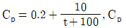
Cp는 cal/gㆍ℃, t는 ℃이며, 계의 압력은 일정하고 온도 범위에서 가스의 상변화는 없다.)- 20.⑤
- 22.31
- 24.71
- 26.93
(정답률: 47%)


8. 실제 기체 압력이 0에 접근할 때, 잔류(residual) 특성에 대한 설명으로 옳은 것은? (단, 온도는 일정하다.)
- 잔류 엔탈피는 무한대에 접근하고 잔류 엔트로피는 0에 접근한다.
- 잔류 엔탈피와 잔류 엔트로피 모두 무한대에 접근한다.
- 잔류 엔탈피와 잔류 엔트로피 모두 0에 접근한다.
- 잔류 엔탈피는 0에 접근하고 잔류 엔트로피는 무한대에 접근한다.
(정답률: 66%)
9. 순환법칙
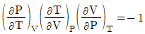
에서 얻을 수 있는 최종 식은? (단, β는 부피팽창률(Volume expansivity), k는 등온압축률(lsothermal compressebility)이다.)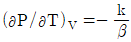
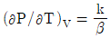
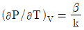
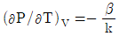
(정답률: 53%)
10. 흐름열량계(Flow Calorimeter)를 이용하여 엔탈피 변화량을 측정하고자 한다. 열량계에서 측정된 열량이 2000W라면, 입력 흐름과 출력 흐름의 비엔탈피(Specific Enthalpy)의 차이는 몇 J/g인가? (단, 흐름열량계의 입력 흐름에서는 0℃의 물이 5g/s의 속도로 들어가며, 출력 흐름에서는 3기압, 300℃의 수중기가 배출된다.)
- 400
- 2000
- 10000
- 12000
(정답률: 54%)
11. 반데르발스(vam der Waals)식에 맞는 실제기체를 등온가역 팽창시켰을 때 행한 일(work)의 크기는? (단,
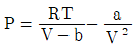
이며, V1은 초기부피, V2는 최종부피이다.)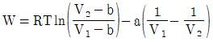
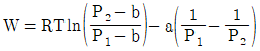
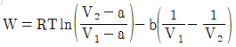
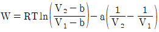
(정답률: 57%)
12. 용액 내에서 한 설분의 퓨개시티 계수를 표시한 식은? (단, øi는 퓨개시티 계수,
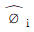
는 용액 중의 성분 i의 퓨개시티, fi는 순수성분 i의 퓨개시티,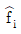
는 용액 중의 성분 i의 퓨개시티 xi는 용액의 몰 분율이다.)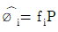
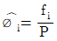
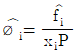
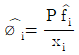
(정답률: 55%)
13. 평형에 대한 다음 조건 중 틀린 것은? (단, øi는 순수성분의 퓨개시티 계수,
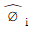
는 용액중의 성분 i의 퓨개시티,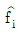
는 혼합물에서 성분 i의 퓨개시티, γi는 활동도 계수이며, xi는 액상에서 성분 i의 조성을 나타내며, 상첨자 V는 기상, L은 액상, S는 고상, l과 ll는 두 액상을 나타낸다.)- 순수성분의 기-액 편형:
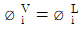
- 2성분 혼합물의 기-액 평형:
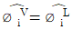
- 2성분 혼한물의 액-액 평형:
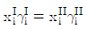
- 2성분 혼합물의 고-기 편형:
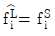
(정답률: 40%)
14. 평형의 조건이 되는 열역학적 물성이 아닌 것은?
- 퓨개시티(fugacity)
- 깁스자유에너지(Gibbs free energy)
- 화학 포텐셜(Chemical potential)
- 엔탈피(Enthalpy)
(정답률: 67%)
15. 3성분계의 기-액 상평형 계산을 위하여 필요한 최소의 변수의 수는 몇 개인가? (단, 반응이 없는 계로 가정한다.)
- 1개
- 2개
- 3개
- 4개
(정답률: 73%)
16. 0℃ 1atm의 물 1kg이 100℃ 1atm의 물로 변하였을 때 엔트로피 변화는 몇 kcal/k인가? (단, 물의 비열은 1.0cal/gㆍK이다.)
- 100
- 1.366
- 0.312
- 0.136
(정답률: 51%)
17. 부피를 온도와 압력의 함수로 나타낼 때 부피 팽창률(β)과 등온압축률(k) 의 관계를 나타낸 식으로 옳은 것은?
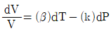
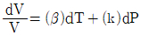
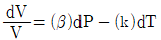
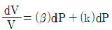
(정답률: 66%)
18. Cp=5cal/molㆍK인 이상기체를 25℃, 1기압으로부터 단열, 가역 과정을 통해 10기압까지 압축시킬 경우, 기체의 최종 온도는 약 몇 ℃인가?
- 60
- 470
- 745
- 1170
(정답률: 48%)
19. 설탕물을 만들다가 설탕을 너무 많이 넣어 아무리 저어도 컵 바닥에 설탕이 여전히 남아있을 때의 자유도는? (단, 물의 증발은 무시한다.)
- 1
- 2
- 3
- 4
(정답률: 68%)
20. 이상기체가 P1, V1, T1의 상태에서 P2, V2, T2까지 가역적으로 단열팽창되었다. 상관관계로 옳지 않은 것은? (단, γ는 비열비이다.)
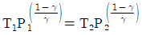
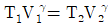
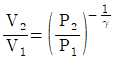
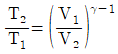
(정답률: 53%)
2과목: 단위조작 및 화학공업양론
21. 0.℃. 0.5atm 하에 있는 질소가 있다. 이 기체를 같은 압력 하에서 20℃ 가열하였다면 처음 체적의 몇 %가 증가하였는가?
- 0.54
- 3.66
- 7.33
- 103.66
(정답률: 57%)
22. CO2 25vol%와 NH3 75vol%의 기체 혼합물 중 NH3의 일부가 산에 흡수되어 제거된다. 이 흡수탑을 떠나는 기체가 37.5vol%의 NH3을 가질 때 처음에 들어있던 NH3의 몇 %가 제거되었는가? (단, CO2의 양은 변하지 않는다고 하며, 산용액의 조금도 증발하지 않는 다고 한다.)
- 85%
- 80%
- 75%
- 65%
(정답률: 60%)
23. 정상상태로 흐르는 유체가 유로의 확대된 부분을 흐를 때 변화하지 않는 것은?
- 유량
- 유속
- 압력
- 유동단면적
(정답률: 66%)
24. 습한 쓰레기에 71wt% 수분이 포함되어 있었다. 최초 수분이 60%를 증발시키면 증발 후 쓰레기 내 수분의 조성은 몇 %인가?
- 40.5
- 49.5
- 50.5
- 59.5
(정답률: 57%)
25. 1.5wt% NaOH 수용액을 10wt% NaOH 수용액으로 농축하기 위해 농축 증발관으로 1.5wt% NaOH 수용액을 1000kg/h로 공급하면 시간당 증발되는 수문의 양은 몇 kg인가?
- 450
- 650
- 750
- 850
(정답률: 61%)
26. 실제기체의 거동을 예측하는 비리얼 상태식에 대한 설명으로 옳은 것은?
- 제1비리얼 계수는 압력에만 의존하는 상수이다.
- 제2비리얼 계수는 조성에만 의존하는 상수이다.
- 제3비리얼 계수는 체적에만 의존하는 상수이다,
- 제4비리얼 계수는 온도에만 의존하는 상수이다.
(정답률: 58%)
27. 37wt% NHO3 용액의 노르말(N) 농도는? (단, 이 용액의 비중은 1.227이다.)
- 6
- 7.2
- 12.4
- 15
(정답률: 54%)
28. 반대수(semi-log) 좌표계에서 직선을 얻을 수 있는 식은? (단, F와 Y는 종속변수이고, t와 x는 독립변수이며, a와 b는 상수이다.)
- F(t)=atb
- F(t)=aebt
- y(x)=ax2+b
- y(x)=ax
(정답률: 58%)
29. Ethylene glycol의 열용량 값이 다음과 같은 온도의 함수일 때, 0℃~100℃ 사이의 온도 범위 내에서 열용량의 평균값은 몇 cal/g ℃인가?
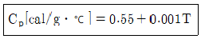
- 0.60
- 0.65
- 0.70
- 0.75
(정답률: 56%)
30. 30kg의 공기를 20℃에서 120℃까지 가열하는 데 필요한 열량은 몇 kcal인가? (단, 공기의 평균정압 비열은 0.24kcal/kg℃이다.)
- 720
- 820
- 920
- 980
(정답률: 71%)
31. 정압비열 0.24kcal/kgㆍ℃의 공기가 수평관 속을 흐르고 있다. 입구에서 공기온도가 21℃, 유속이 90m/s이고, 출구에서 유속은 150m/s이며, 외부와 열교환이 전혀 없다고 보면 출구에서의 공기온도는?
- 10.2℃
- 13.8℃
- 28.2℃
- 31.8℃
(정답률: 30%)
32. 다음 중 국부속도(local velocity) 측정에 가장 적합한 것은?
- 오리피스미터
- 피토관
- 벤츄리미터
- 로터미터
(정답률: 56%)
33. 온도에 민감하여 증발하는 동안 손상되기 쉬운 의약품을 농축하는 방법으로 적절한 것은?
- 가열시간을 늘린다.
- 증기공간이 절대압력을 낮춘다.
- 가열온도를 높인다.
- 열전도도가 높은 재질을 쓴다.
(정답률: 59%)
34. 고체건조의 항률 건조 단계(constant rate period)에 대한 설명으로 틀린 것은?
- 항률 건조 단계에서 복사나 전도에 의한 열전달이 없는 경우 고체 온도는 공기의 습구온도와 동일하다.
- 항률 건조 단계에서 고체의 건조 속도는 고체의 수분함량과 관계가 없다.
- 항률 건조 속도는 열전달식이나 물질전달식이나 물질전달식을 이용하여 계산할 수 있다.
- 주로 고체의 임계 함수량(critical moisture content) 이하에서 항률 건조를 할 수 있다.
(정답률: 31%)
35. 추출에서 추료(feed)에 추제(extracting solvent)를 가하여 잘 접촉시키면 2상으로 분리된다. 이 중 불활성 물질이 많이 남아 있는 상을 무엇이라고 하는가?
- 추출상(extract)
- 추잔상(raffinate)
- 추질(solute)
- 슬러지(sludge)
(정답률: 67%)
36. 증류에서 일정한 비휘발도의 값으로 2를 가지는 2성분 혼합물을 90mol%인 탑위제품과 10mol%인 탑밑제품으로 분리하고자 한다. 이 때 필요한 최소 이론 단수는?
- 3
- 4
- 6
- 7
(정답률: 27%)
37. 노즐흐름에서 충격파에 대한 설명으로 옳은 것은?
- 급격한 단면적 증가로 생긴다.
- 급격한 속도 감소로 생긴다.
- 급격한 압력 감소로 생긴다.
- 급격한 밀도 증가로 생긴다.
(정답률: 45%)
38. 흡수 충전탑에서 조작선(operating line)의 기울기를 L/V이라 할 때 틀린 것은?
- L/V의 값이 커지면 탑의 높이는 낮아진다.
- L/V의 값이 작아지면 탑의 높이는 높아진다.
- L/V의 값은 흥수탑의 경제적인 운전과 관계가 있다.
- L/V의 최솟값은 흡수탑 하무에서 기-액 간의 농도차가 가장 클 때의 값이다.
(정답률: 61%)
39. 룰 문쇄기에 상당직격 4cm인 원료를 도입하여 상당직경 1cm로 문쇄한다. 문쇄 원료와 롤 사이의 마찰계수가
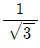
일 때 롤 지름은 약 몇 cm인가?- 6.6
- 9.2
- 15.3
- 18.4
(정답률: 34%)
40. 운동점도(Kinematic viscosity)의 단위는?
- Nㆍs/m2
- m2/s
- cP
- m2/sㆍN
(정답률: 50%)
3과목: 공정제어
41. 전류식 비례제어기가 20℃에서 100℃까지의 범위로 온도를 제어하는 데 사용된다. 제어기는 출력전류가 4mA에서 20ma까지 도달하도록 조정되어 있다면 제어기의 이득(mA/℃)은?
- 5
- 0.2
- 1
- 10
(정답률: 63%)
42. PD 제어기에서 다음과 같은 입력신호가 들어올 경우, 제어기 출력 형태는? (단, Kc는 1이고 τD는 1이다.)
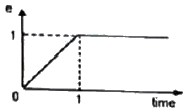
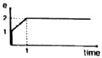
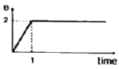
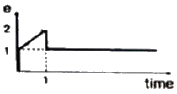
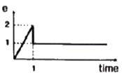
(정답률: 60%)
43. Anti Reset Windup에 관한 설명으로 가장 거리가 먼 것은?
- 제어기 출력이 공정 입력 한계에 결렸을 때 작동한다.
- 적분 동장에 부과된다.
- 큰 설정치 변화에 공정 출력이 크게 흔들리는 것은 방지한다.
- Offset을 없애는 동작이다.
(정답률: 60%)
44. 다음과 같은 2차계의 주파수 응답에서 감쇄 계수 값에 관계없이 위상의 지연이 90°가되는 경우는? (단, τ는 시정수이고, ω는 주파수이다.)
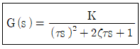
- ωτ-1일 때
- ω=τ일 때
- ωτ=√2 일 때
- ω=τ2 일 때
(정답률: 43%)
45.
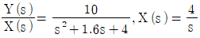
인 계에서 y(t) 의 최종값(ultimate value)은?- 10
- 2.5
- 2
- 1
(정답률: 61%)
46. 다음 그림과 같은 액위제어계에서 제어밸브는 ATO(Air To-Opeen)형이 사용된다고 가정할 때에 대한 설명으로 옳은 것은? (단,Ditect는 공정출력이 상승할 때 제어출력이 상승함을, Revetse는 제어출력이 하강함을 의미한다.)
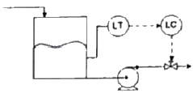
- 제어기 이득의 부호에 관계없이 제어기의 동작 방향은 Revetse이어야 한다.
- 제어기 동장방향은 Direct, 즉 제어기 이득은 음수이어야 한다.
- 제어기 동작뱡향은 Direct, 즉 제어기 이득은 양수이어야 한다.
- 제어기 동작뱡향은 Revetse, 즉 제어기 이득은 음수이어햐 한다.
(정답률: 39%)
47. 다음과 같은 특성식(characteristic eauation)을 갖는 계가 있다면 이 께는 Routh 시험 법에 의하여 다음의 어느 경우에 해당하는가?
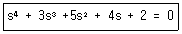
- 안정(stable)하다.
- 불안정(unstable)하다.
- 모든 근(root)이 허수축의 우특반면에 존재한다.
- 감쇠진동을 일으킨다.
(정답률: 51%)
48. 동적계(Dynamic System)를 전달함수로 표현하는 경우를 옳게 설명한 것은?
- 선형계의 동특성을 전달할 수 없다.
- 비선형계를 선형화하고 전달함수로 표현하면 비선형 동특성을 근사할 수 있다.
- 비선형계를 선형화하고 전달함수로 표현하면 비선형 동특성을 정확히 표현할 수 있다.
- 비선형계의 동특성을 선형화하지 않아도 전달함수로 표현할 수 있다.
(정답률: 61%)
49. 다음 그림과 같은 제어계의 제어게의 전달함수
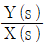
는?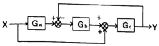
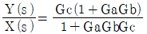
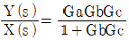
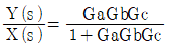
(정답률: 57%)
50. 온도 측정장치인 열전대를 반응기 탱크에 삽입한 접점의 온도를 Tm 유체와 접점 사이의 총열전달 계수(overall heat transfer coefficient)를 U, 접점의 표면적을 A, 탱크의 온도를 T, 접점의 질량을 m, 접점의 비열을 Cm이라고 하였을 때 접점의 에너지 d수지식은? (단, 열전대의 시간상우 )
(정답률: 30%)
51. 다음 블록선도의 닫힌 루프 전달함수는?
(정답률: 59%)
52. 1차계의 단위계단응답에서 시간 t가 2τ일 때 퍼센트 응답은 약 얼마인가? (단, τ는 1차계시간상수이다.)
- 50%
- 63.2%
- 86.5%
- 95%
(정답률: 56%)
53. Y = P1X± P2X의 블록선도로 옳지 않은 것은?
(정답률: 60%)
54. 어떤 2차계의 damping ratio(ξ)가 1.2일 때 unit step response는?
- 무감쇠 진동응답
- 진동응답
- 무진동 감쇠응답
- 입계 감쇠응답
(정답률: 43%)
55. 아날로그 계장의 경우 센서 전송기의 출력신호, 제어기의 출력신호는 흔히 4~20mA의 전류로 전송된다. 이에 대한 설명으로 틀린 것은?
- 전류신호는 전압신호에 비하여 장거리 전송시 전자기적 잡음에 덜 민감하다.
- 0%를 4mA로 설정한 이유는 신호선의 단락여부를 쉽게 판단하고, 0% 신호에서도 전자 기적 잡음에 덜 민감하게 하기 위함이다.
- 0~150℃ 범위를 측정하는 전송기의 이득은 20/150mA/℃이다.
- 제어기 출력으로 ATC(Air-To-cloce)밸브를 동작시키는 경우 8mA에서 밸브 열림도(valve position)는 0.75가 된다.
(정답률: 57%)
56. 다음 함수를 Laplace 변환할 때 올바른 것은?
(정답률: 65%)
57. 다음과 같은 블록선도에서 정치제어(regulatory control)일 때 옳은 상관식은?
- C=GcG1G2A
- M=(R+B)GcG1
- C=GcG1G2(-B)
- M=GcG1(-B)
(정답률: 36%)
58. 다음 중 캐스케이드제어를 적용하기에 가장 적합한 동특성을 가진 경우는?
- 부제어루프 공정: , 주제어루프 공정:
- 부제어루프 공정: 주제어루프 공정:
- 부제어루프 공정: 주제어루프 공정:
- 부제어루프 공정: 주에어루프 공정:
(정답률: 56%)
59. 어떤 공정에 대하여 수동모드에서 제어기 출력을 10% 계단 증가시켰을 때 제어변수가 초기에 5%만큼 증가하다가 최종적으로는 원래 값보다 10%만큼 줄어들었다. 이에 대한 설명으로 옳은 것은? (단, 공정입력의 상승이 고정출력의 상승을 초래하면 정동작 공저이고, 공정출력의 상승이 제어출력의 상승을 초래하면 정동작 제어기이다.)
- 공정이 정동작 공저이므로 PlD 제어기는 역동작으로 설정해야한다.
- 공정이 역동작 공정이므로 PlD 제어기는 정동작으로 설정해야한다.
- 공정 이득값은 제어변수 과도응답 변화 폭을 기준하여 -1.5이다.
- 공정 이득값은 과도 응답 최대치를 기준하여 0.5이다.
(정답률: 43%)
60. 인 신호의 최종값(fimal value)은?
- 2
- ∞
- 0
- 1
(정답률: 64%)
4과목: 공업화학
61. NaOH 제조에 사용하는 격박법과 수은법을 옳게 비교한 것은?
- 전류밀도는 수은법이 크고, 제품의 품질은 격막법이 좋다.
- 전류밀도는 격막법이 크고, 제품의 품질은 수은법이 좋다.
- 전류밀도는 격막법이 크고, 제품의 품질의 품질은 격막법이 좋다.
- 전류밀도는 수은법이 크고, 제품의 품질은 수은법이 좋다.
(정답률: 57%)
62. 무기화학물과 비교한 유기화합물의 일반적인 특성으로 옳은 것은?
- 가연성이 있고, 물에 쉽게 용해되지 않는다.
- 가연성이 없고, 물에 쉽게 용해되지 않는다.
- 가연성이 없고, 물에 쉽게 용해된다.
- 가연성이 있고, 물에 쉽게 용해된다.
(정답률: 53%)
63. 카프로락탐에 관한 설명으로 옳은 것은?
- 나일론 6,6의 원료이다.
- cyclohexanone oxime을 황산처리하면 생성된다.
- cyclohexanone과 암모니아의 반응으로 생성된다.
- cyclohoxanone 및 초산과 아민의 반응으로 생성된다.
(정답률: 52%)
64. 석유정제에 사용된느 용제가 갖추어야 하는 조건이 아닌 것은?
- 선택성이 높아야 한다.
- 추출할 성분에 대한 용해도가 높아야 한다.
- 용제의 비점과 추출성분의 비점의 차이가 적어야 한다.
- 독성이나 장치에 대한 부식성이 적어야 한다.
(정답률: 70%)
65. 암모니아 산화법에 의하여 질산을 제조하면 상압에서 순도가 약 65% 내외가 되어 공업적으로 사용하기 힘들다. 이럴 경우 순도를 높이기 위한 일반적인 방법으로 옳은 것은?
- H2SO4의 흡수제를 첨가하여 3성분계를 만들어 농축한다.
- 온도를 높여 끓여서 물을 날려 보낸다.
- 촉매를 첨가하여 부가반응을 일으킨다.
- 계면활성제를 사용하여 물을 제거한다.
(정답률: 55%)
66. 질소비료 중 이론적으로 질소함유량이 가장 높은 비료는?
- 황산암모늄(황안)
- 염화암모늄(염안)
- 질산암모늄(질안)
- 요소
(정답률: 61%)
67. 일반적으로 고분자 합성을 단계 성장 중합(축합중합)과 사슬 성장 중합(부가중합) 반응으로 분리될 수 있다. 이에 대한 설명으로 옳지 않은 것은?
- 단계 성장 중합은 작용기를 가진 분자들 사이의 반응으로 일어난다.
- 단계 성장 중합은 중간에 반응이 중지될 수 없고, 중간체도 사슬 성장 중합과 마찬가지로 분리될 수 없다.
- 사슬 성장 중합은 중합 중에 일시적이지만 분리될 수 없는 중간체를 가진다.
- 사슬 성장 중합은 탄소-탄소 이중 경합을 포함한 단량체를 기본으로 하여 중합이어진다.
(정답률: 51%)
68. 가성소다 전해법 중 수은법에 대한 설명으로 틀린 것은?
- 양극은 흑연, 음극은 수은을 사용한다.
- Na+는 수은에 녹아 엷은 아말감을 형성한다.
- 아말감은 물과 반응시켜 NaOH와 H2를 생성한다.
- 아말감 중 Na 함량이 높으면 분해 속도가 느려지므로 전해질 내에서 H2가 제거된다.
(정답률: 59%)
69. 분자량이 5000, 10000, 15000, 20000, 25000 g/mol로 이루어진 다섯 개의 고분자가 각각 50, 100, 150, 200, 250kg이 있다. 이 고분자의 다분산도(polydispersity)는?
- 0.8
- 1.0
- 1.2
- 1.4
(정답률: 33%)
70. 프로필렌(CH2=CH-CH2)에서 쿠멘( )을 합성 반응으로 옳은 것은?
- 산화반응
- 알킬화반응
- 수화공정
- 중합공정
(정답률: 50%)
71. 감압 종류 공정을 거치지 않고 생산된 석유화학제품으로 옳은 것은?
- 유활유
- 아스팔트
- 나프타
- 벙커C유
(정답률: 50%)
72. 부식 전류가 커지는 원인이 아닌 것은?
- 용존 산소 농도가 낮을 때
- 온도가 높을 때
- 금속이 전도성이 큰 전해액과 접촉하고 있을 때
- 금속 표면의 내부 응력의 차가 클 때
(정답률: 60%)
73. 황산 제조 방법 중 연실법에서 장치의 능률을 높이고 경제적으로 조업하기 위하여 개량된 방법 또는 설비는?
- 소량응축법
- Pertersen Tower법
- Reynold법
- Monsanto법
(정답률: 62%)
74. 에폭시 수지에 대한 설명으로 틀린 것은?
- 접착제, 도료 또는 주형용 수지로 만들어지면 금속 표면에 잘 접착한다.
- 일반적으로 비스페놀A와 에피클로로히드린의 반응으로 제조한다.
- 열에는 안정하지만 강도가 좋지 않은 단점이 있다.
- 에폭시 수지 중 hydroxy기도 epoxy기와 반응하여 가교 결합을 형성할 수 있다.
(정답률: 62%)
75. 화학비료를 토양시비 시 토양이 산성화가 되는 주된 원인으로 옳은 것은?
- 암모늄 이온(종)
- 토양콜로이드
- 황산 이온(종)
- 질산화미생물
(정답률: 53%)
76. 인 31g을 완전 연소시키기 위한 산소의 부피는 표준상태에서 몇 L인가? (단, P의 원자량은 31이다.)
- 11.2
- 22.4
- 28
- 31
(정답률: 45%)
77. 일반적으로 니트로화 반응을 이용하여 벤젠을 니트로벤젠으로 합성할 때 많이 사용하는 것은?
- AICI3+HCI
- H2SO4+HNO3
- (CH3CO)2O2+HNO3
- HCI+HNO3
(정답률: 49%)
78. 인광석을 산분해하여 인산을 제조하는 방식 중 습식법에 해당하지 않는 것은?
- 황산 분해법
- 염산 분해법
- 질산 분해법
- 아세트산 분해법
(정답률: 57%)
79. 다음 중 III-V 화합물 반도체로만 나열된 것은?
- SiC, SiGe
- AlAs, AISb
- CdS, CdSe
- Pbs, PbTe
(정답률: 57%)
80. 일반적인 공정에서 에틸렌으로부터 얻는 제품이 아닌 것은?
- 에틸벤젠
- 아세트알데히드
- 에탄올
- 염화알릴
(정답률: 59%)
5과목: 반응공학
81. 다음과 같은 평행반응이 진행되고 있을 때 원하는 생성물이 S라면 반응물의 농도는 어떻게 조절해 주어야 하는가?(오류 신고가 접수된 문제입니다. 반드시 정답과 해설을 확인하시기 바랍니다.)
- CA를 높게, CB를 낮게
- CA를 낮게, CB를 높게
- CA와 CB를 높게
- CA와 CB를 낮게
(정답률: 56%)
82. 어느 조건에서 Space time이 3초이고, 같은 조건 하에서 원료의 공급률이 초당 300L일 때 반응기의 체적은 몇 L인가?
- 100
- 300
- 600
- 900
(정답률: 63%)
83. 평균 체류시간이 같은 관형반응기와 혼합흐름 반응기에서 A→R로 표시되는 화학반응이 일어날 때 전환율이 서로 같다면 이 반응의 차수는?
- 0차
- 1/2차
- 1차
- 2차
(정답률: 47%)
84. 회분계에서 반응물 A의 전화율, XA를 옳게 나타낸 것은? (단, NA는 A의 몰수, NAO는 초기 A의 몰수이다.)
(정답률: 58%)
85. 촉매 작용의 일반적인 특성에 대한 설명으로 옳지 않은 것은?
- 활성화 에너지가 촉매를 사용하지 않을 경우에 비해 낮아진다.
- 촉매 작용에 의하여 평형 조성을 변화시킬 수 있다.
- 촉매는 여러 반응에 대한 선택성이 높다.
- 비교적 적은 양의 촉매로도 다량의 생성물을 생성시킬 수 있다.
(정답률: 58%)
86. A+B→R인 비가역 기상 반응에 대해 다음과 같은 실험 데이터를 얻었다. 반응 속도식으로 옳은 것은? (단, t1/2은 B의 반감기이고, PA 및 PB는 각각 A 및 B의 초기 압력이다.)
(정답률: 40%)
87. 크기가 같은 plug flow 반응기(PFR)와 mixed flow 반응기(MFR)를 서로 연결하여 다음의 2차 반응을 실행하고자 한다. 반응물 A의 전환율이 가장 큰 경우는?
- 전환율은 반응기의 연결 방법, 순서와 상관없이 동일하다.
(정답률: 53%)
88. 불균질(heterogeneous) 반응 속도에 대한 설명으로 가장 거리가 먼 것은?
- 불균질 반응에서 일반적으로 반응 속도식은 화학 반응항에 물질 이동항이 포함된다.
- 어떤 단계가 비선형성을 띠면 이를 회피하지 말고 충괄 속도식에 적용하여 문제를 해결해야 한다.
- 여러 과정의 속도를 나타내는 단위가 서로 같으면 총괄 속도식을 유도하기 편리하다.
- 총괄 속도식에는 중간체의 농도항이 제거되어야 한다.
(정답률: 54%)
89. 균일계 가역 1차 반응 이 회분식 반응기에서 순수한 A로부터 반응이 시작하여 평형에 도달했을 때 A의 전환율이 85%이었다면 이 반응의 평형상수는 KC는?
- 0.18
- 0.85
- 5.67
- 12.3
(정답률: 48%)
90. A+B→ R, rR=1.0CA1.5CB0.3과 A+B→S, rS=1.0CA0.5CB1.3에서 R이 요구하는 물질일 때 A의 전화율이 90%이면 혼합흐름반응기에서 R의 총괄수율(overall fractional yield)은 얼마인가? (단, A와 B의 농도는 각각 20mol/L이며 같은 속도로 들어간다.)
- 0.225
- 0.45
- 0.675
- 0.9
(정답률: 27%)
91. 다음 반응이 회분식 반응기에서 일어날 때 반응시간이 t이고 처음에 순수한 A로 시작하는 경우, 가역 1차 반응을 옳게 나타낸 식은? (단, A와 B의 농도는 CA, CB이고, CAeq는 평형상태에서 A의 농도이다.)
(정답률: 38%)
92. 1차 반응인 A→R, 2차 반응(desired)인 A→S, 3차 반응인 A→T에서 S가 요구하는 물질일 경우에 다음 중 옳은 것은?
- 플러그흐름반응기를 쓰고 전화율을 낮게 한다.
- 혼합흐름반응기를 쓰고 전화율을 낮게 한다.
- 중간수준의 A농도에서 혼합흐름반응기를 쓴다.
- 혼합흐름반응기를 쓰고 전화율을 높게 한다.
(정답률: 40%)
93. C3H5CH3+H2→C5H6+CH4의 톨루엔과 소수의 반응은 매우 빠른 반응이며 생성물은 평형 상태로 존재한다. 톨루엔의 초기 농도가 2mol/L, 수소의 초기농도가 4mol/L이고 반으을 900K에서 진행시켰을 때 반응 후 수소의 농도는 약 몇 mol/L인가? (단, 900K에서 평형상수 KP=227이다.)
- 1.89
- 1.95
- 2.01
- 4.04
(정답률: 40%)
94. 그림에 해당되는 반응 형태는?
(정답률: 49%)
95. 온도가 27℃에서 37℃로 될 때 반응속도가 2배로 빨라진다면 활성화 에너지는 약 몇 cal/mol인가?
- 1281
- 1376
- 12810
- 13760
(정답률: 60%)
96. 반응물 A는 1차 반응 A→R에 의해 분해된다. 사로 다른 2개의 플러그흐름반응기에 다음과 같이 반응물의 주입량을 달리하여 분해 실험을 하였다. 두 반응기로부터 동일한 전화율 80%를 얻었을 경우 두 반응기의 부피비 V2/V1은 얼마인가? (단, FA0 공급물 속도이고, CA0는 초기 농도이다.)
- 0.5
- 1
- 1.5
- 2
(정답률: 48%)
97. 플러그흐름반응기를 다음과 같이 연결할 때 D와 같이 연결할 때 D와 E에서 같은 전화율을 얻기 위해서는 D쪽으로의 공급속도 분율 D/T 값은 어떻게 되어야 하는가?
- 2/8
- 1/3
- 5/8
- 2/3
(정답률: 60%)
98. Thiele 계수에 대한 설명으로 틀린 것은?
- Thiele 계수는 가속도와 속도의 비를 나타내는 차원수이다.
- Thiele 계수의 클수록 입자 내 농도는 저하된다.
- 촉매입자 내 유효농도는 Thiele 계수의 값에 의존한다.
- Thiele 계수는 촉매표면과 내부의 효율적 이용의 척도이다.
(정답률: 37%)
99. 우유를 저온살균할 때 63℃에서 30분이 걸리고, 74℃에서는 15초가 걸렸다. 이 때 활성화 에너지는 약 몇 kJ/mol인가?
- 365
- 401
- 422
- 450
(정답률: 55%)
100. 1차 직렬반응이 일 경우 볼 수 있다. 이 때 k의 값은?
- 11.00 s-1
- 9.52 s-1
- 0.11 s-1
- 0.09 s-1
(정답률: 41%)
카르노사이클은 열역학에서 가장 효율적인 열기계 사이클 중 하나로, 열을 일정한 온도에서 흡수하고 방출하는 과정을 반복하여 일정한 열차를 얻는 것을 목표로 합니다. 이 사이클은 네 개의 단계로 이루어져 있습니다.
1. 등온팽창: 열을 흡수하여 온도가 일정한 상태에서 가스가 팽창합니다.
2. 등온압축: 가스를 압축하여 일정한 온도를 유지합니다.
3. 단열팽창: 가스를 팽창시켜 온도가 낮아지게 합니다.
4. 단열압축: 가스를 압축하여 열을 방출합니다.
이 중에서도 등온팽창과 등온압축은 가장 중요한 단계입니다. 이 단계에서 가스는 열을 흡수하거나 방출하면서 일정한 온도를 유지합니다. 이것이 가능한 이유는 열을 흡수하거나 방출하는 과정에서 가스와 주변 환경 사이에 열 전달이 완전히 이루어지기 때문입니다. 이러한 과정을 가역과정이라고 합니다.
따라서, 카르노사이클의 가역 순서는 등온팽창 → 등온압축 → 단열팽창 → 단열압축입니다.